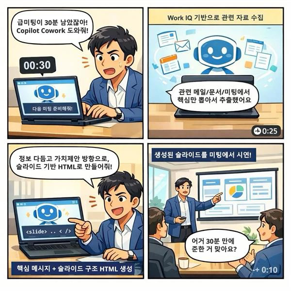

30분 뒤 미팅,
발표 자료가 아직 준비되지 않았다!?
발표 자료는 제가 만들테니, 당신은 당신만이 할 수 있는 일에 집중하세요
일정은 바쁜데, 내가 일한 것들이 메일·문서·지난 미팅 메모에 잔뜩 흩어져 쌓여 있네.
다음 미팅까지 30분 남았는데 "말이 되는 자료"를 만들려면 어떤 순서로 움직여야 할까?
반복되는 일상
누구나 반복적으로 겪고 있는 상황

① 30분 남음 — ② 흩어진 자료를 긁어모음 — ③ 슬라이드로 재구성 — ④ 미팅 시연
- 관련 정보는 이미 여기저기 존재한다 (메일, 문서, 지난 회의록)
- 그걸 지금 바로 쓸 수 있는 형태가 아닐 뿐
- 발표 시간이 30분밖에 남지 않았다
- 나는 한 사람이고, 손은 두 개다
- 빈 슬라이드부터 열어놓고 구조를 고민하는 것
- 디자인·정렬·색감부터 손대는 것
- 모든 파일을 다 열어보고 나서 정리를 시작하는 것
- "완벽하게 정리된 자료" 를 목표로 잡는 것
30분 뒤, 무엇이 손에 있어야 하나
도구를 고르기 전에, 결과물의 조건을 먼저 정의한다. 이게 흐려지면 30분은 순식간에 사라진다.
근거 있는 주장
"내 생각"이 아니라 있었던 사실·수치·결정을 근거로 말할 수 있어야 한다.
한눈에 들어오는 구조
말로 풀 시간이 없다. 보자마자 이해되는 페이지 단위 메시지가 필요하다.
즉시 재생 가능
회의실 화면에서 바로 띄우고 넘길 수 있는 형태여야 한다.
원칙. 위 세 가지 외에는 전부 후순위다. 폰트, 테마, 애니메이션, 로고 위치 — 30분 안에는 하지 않는다.
접근 순서 — 4단계
도구와 무관하게 항상 이 순서를 지킨다. 각 단계는 다음 단계의 입력을 만드는 일이다.
흩어진 근거
무엇을 말할까
슬라이드 형태
회의에서 재생
맥락 수집 — 흩어진 근거를 한 자리에
빈 페이지에 글을 쓰지 않는다. 먼저 있는 것을 긁어모은다. 지금 이 주제에 대해 이미 작성된 문서·메일·결정·수치가 어딘가에 존재한다.
이 단계의 목표
- 주제와 관련된 원천 자료 5~10개를 한 곳에 모은다
- 각 자료에서 무엇이 중요한지 한 줄 메모
- 반복적으로 등장하는 키워드·수치·결정을 식별
실제로 한 일
이번에 쓴 프롬프트
메시지 정제 — 무엇을 말할지 먼저 정한다
자료가 모이면 유혹이 온다. "모은 걸 다 보여주고 싶다." 이걸 막아야 한다. 슬라이드는 전달하고 싶은 메시지를 중심으로 구성한다. 자료는 그 메시지를 뒷받침하는 근거다.
이 단계의 목표
- 청중이 회의 후에 가져갈 결론 하나를 정한다
- 그 결론을 받치는 핵심 논점 3개를 뽑는다
- 각 논점마다 근거 1~2개를 매칭한다
이번 미팅의 구조
| 구성 요소 | 내용 |
|---|---|
| 결론 한 줄 | O사와의 협업은 파일럿 3개월 조건부로 진행하자 |
| 논점 1 | 기회는 명확하다 — 근거: 이전 미팅의 구체적 수요, 시장 데이터 |
| 논점 2 | 리스크는 기술 통합 영역에 몰려 있다 — 근거: 공유 문서의 제약사항 목록 |
| 논점 3 | 파일럿 기간 안에 검증 가능하다 — 근거: 유사 케이스 2건 |
이번에 쓴 프롬프트
시각화 — 슬라이드 형태로 빠르게
메시지와 근거가 정리됐으니, 이제 보여줄 수 있는 형태로 옮긴다. 30분 안에는 파워포인트 템플릿과 싸우지 않는다. 즉시 띄울 수 있는 HTML 슬라이드가 가장 빠르다.
왜 HTML 슬라이드인가
생성이 빠르다
AI가 한 번에 완성된 파일을 내놓을 수 있는 형식.
열기가 쉽다
브라우저만 있으면 열린다. 템플릿 호환성 문제 없음.
수정이 빠르다
텍스트 한 줄 바꾸는 데 초 단위면 된다.
이번에 쓴 프롬프트
시간을 지키는 세 가지 룰
- 한 번에 완성된 파일을 받는다. 여러 파일로 쪼개 달라고 하지 않는다.
- 첫 출력을 고치지 않고 먼저 열어본다. 문제가 보여야 고치는 범위가 좁다.
- 수정은 "슬라이드 N번의 두 번째 불릿을 ○○로 바꿔줘" 식으로 좁게 지정한다.
시연 — 회의실에서 바로 띄운다
HTML 파일 하나면 충분하다. 로컬에서 더블 클릭하거나, 공유 드라이브에 올려 링크로 연다. 필요하면 그 자리에서 한 줄 수정하고 새로고침한다.
회의 직전 체크
- 브라우저 전체화면 단축키 확인 (대부분
F11또는Ctrl+Cmd+F) - 노트북 배율·확대 해제 → 원래 레이아웃이 유지되는지 확인
- 외부 이미지·폰트가 포함돼 있다면 네트워크 없이 열리는지 한 번 테스트
시연 중 수정이 필요하면
F12) → 해당 슬라이드의 텍스트를 인라인 편집. 파일을 다시 생성할 필요 없다. 사람들에게 보이는 것만 바꾸면 된다.
돌아보기 — 무엇이 빨랐나
같은 30분을 썼는데, 이전에는 반도 못 만들던 자료를 끝낼 수 있었다. 차이는 도구가 아니라 순서에서 왔다.
- 빈 슬라이드를 열고 구조를 고민하는 데 10분
- 폴더를 뒤져 자료를 찾는 데 10분
- 한 슬라이드에 정렬과 폰트를 맞추는 데 5분
- 남은 5분 안에 내용을 채워야 해서 결국 쉬운 말로 때움
- 수집을 AI에 맡겨 자료 탐색 시간 거의 0
- 메시지 구조를 먼저 정해서 슬라이드 수정이 거의 없음
- HTML 한 파일로 끝나서 템플릿 정렬 이슈 없음
- 남는 시간을 발표 리허설에 썼다
배운 것. 급할수록 "빨리 만들어주는 도구"가 아니라 순서를 거꾸로 뒤집지 않는 규율이 시간을 만들어낸다. 수집 → 메시지 → 시각화 → 시연. 이 순서만 지키면 도구가 바뀌어도 시간이 산다.
다른 상황에도 같은 순서
같은 4단계는 다음과 같은 상황에도 그대로 적용된다. 도구는 달라질 수 있다.
- 수집 — 해당 고객과의 이전 티켓·대화·계약 조건을 모은다
- 메시지 — 이 회신으로 전달할 결론 한 줄을 정한다 (수용 / 부분 수용 / 반려+대안)
- 시각화 — 이때는 HTML이 아니라 정제된 메일 본문이 결과물
- 시연 — 보내기 전에 소리 내어 읽어본다
- 수집 — 알람 로그, 배포 이력, 오류 메시지, 영향 범위 지표
- 메시지 — 원인(또는 가설) / 현재 상태 / 복구 계획 / 재발 방지 네 줄
- 시각화 — 타임라인 한 장 + 상태 판넬 한 장이면 충분
- 시연 — 질문이 나올 지점을 먼저 예상하고 페이지로 준비
- 수집 — PR 목록, 이슈 업데이트, 회의 결정사항
- 메시지 — 이번 주 주요 진전 3줄 + 막혀 있는 것 1줄
- 시각화 — 마크다운 한 장이면 된다
- 시연 — 팀 채널에 그대로 붙여넣기
- 수집 — 관련 배경, 과거 유사 결정, 비용·일정 데이터
- 메시지 — 요청하는 결정 한 줄 + 선택지 비교 표
- 시각화 — 한 페이지 문서. 표 하나로 충분할 때가 많다
- 시연 — 결정권자가 1분 안에 읽을 수 있는지 재검토